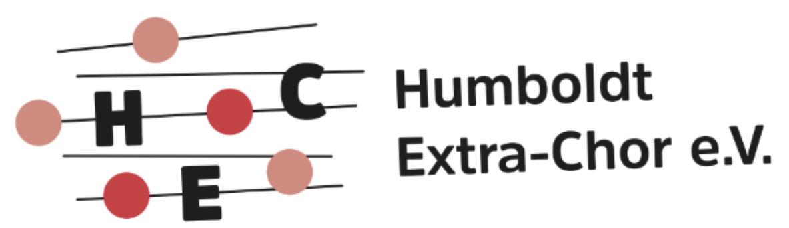

Zeiten
19:00 Uhr während der Winterzeit
19:15 Uhr während der Sommerzeit

Willkommen auf der Informationsseite des Humboldt-Extra-Chor e.V. Wir singen gemeinsam mit Freude an niveauvoller Chormusik und einem kultivierten Chorklang.
Über uns
Der Humboldt-Extra-Chor ergänzt das Musikleben des Humboldt-Gymnasiums Ulm. Eltern, ehemalige Schüler, Lehrer und Singbegeisterte singen hier zusammen.
Das gemeinsame Proben hat ein bis zwei Auftritte je Schuljahr als Ziel. Für großbesetzte Werke wie Oratorien oder ein gemischtes Konzertprogramm wird der Extra-Chor immer wieder mit den Schülerchören des Gymnasiums zusammengeführt.
Proben
19:00 Uhr während der Winterzeit
19:15 Uhr während der Sommerzeit
Humboldt-Gymnasium Ulm
Karl-Schefold-Straße 18
89073 Ulm
Neue Sängerinnen und Sänger sind herzlich eingeladen, bei einer Probe vorbeizuschauen.
hgu-extra-chor@gmx.deRepertoire
Das Repertoire ist abwechslungsreich und reicht von geistlicher Chormusik bis zu weltlichen Chorwerken. Im Mittelpunkt stehen gemeinsamer Klang, sorgfältige Probenarbeit und Auftritte im Schulleben.
Kontakt
Nehmen Sie gerne Kontakt mit uns auf, wenn Sie mitsingen möchten oder Fragen zum Chor haben.